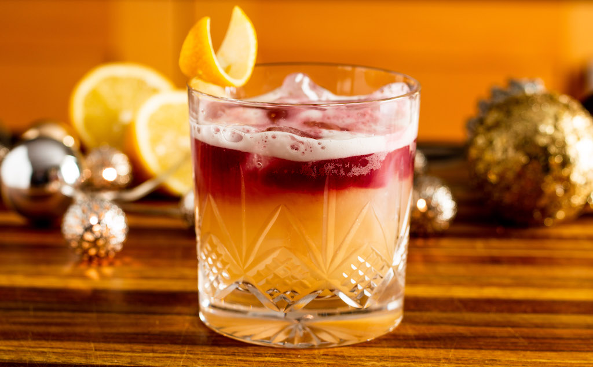

New York Sour

May I introduce you to one of the most stunning and delicious cocktails out there!
This cocktail is the classic whiskey sour that is given another layer of pizzaz on top to enhance the overall experience.
What you will need
- 2 ounces bourbon whiskey: as high quality as possible (you can use any whiskey, I just prefer the flavor of bourbon)
- 1 ounce lemon juice
- 3/4 ounce simple syrup (I recommend maple syrup)
- 1/2 ounce red wine
How to make
- Add the whiskey, lemon juice, simple (or maple) syrup into a shaker with ice and shake hard until-well chilled.
- Strain into glass over fresh ice
- Slowly pour the red wine over the back of a spoon so that the wine floats on top of the drink
This cocktail is definitely one of the most bangin' cocktails out there. I prefer the addition of maple syrup to the drink rather than simple syrup, this is because maple syrup is a natural sweetener that isnt extremely overpowering, and can actually add a more complex profile to the drink.